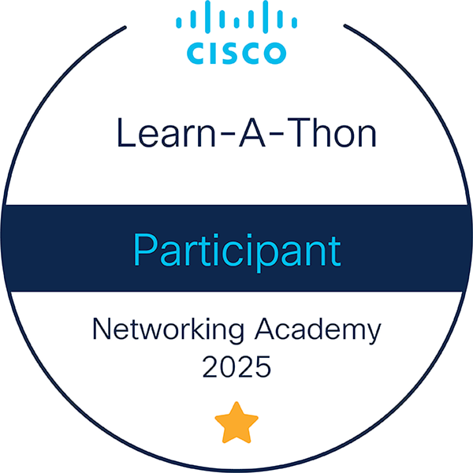

Data Analytics Essentials
Cisco Networking Academy
Analytics · Data ThinkingI see certifications as more than badges. They reflect initiative, curiosity, and a willingness to build knowledge beyond the classroom. This section brings together the areas I have intentionally explored and developed.
Cisco Networking Academy
Analytics · Data ThinkingCisco Networking Academy
Data Science · FoundationsCisco Networking Academy
Security · Awareness
Cisco Networking Academy
Networking · TroubleshootingRed Hat
Linux · AdministrationRed Hat
Systems · OperationsCisco Networking Academy
Networks · Infrastructure